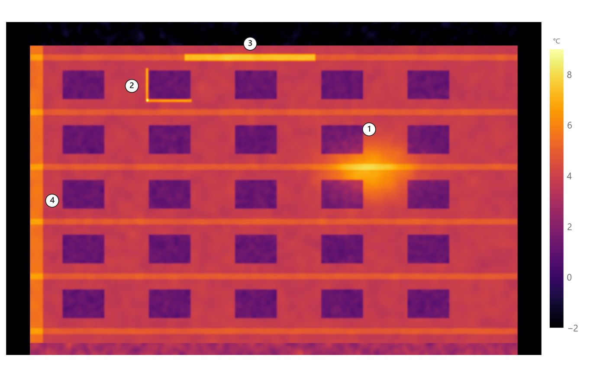
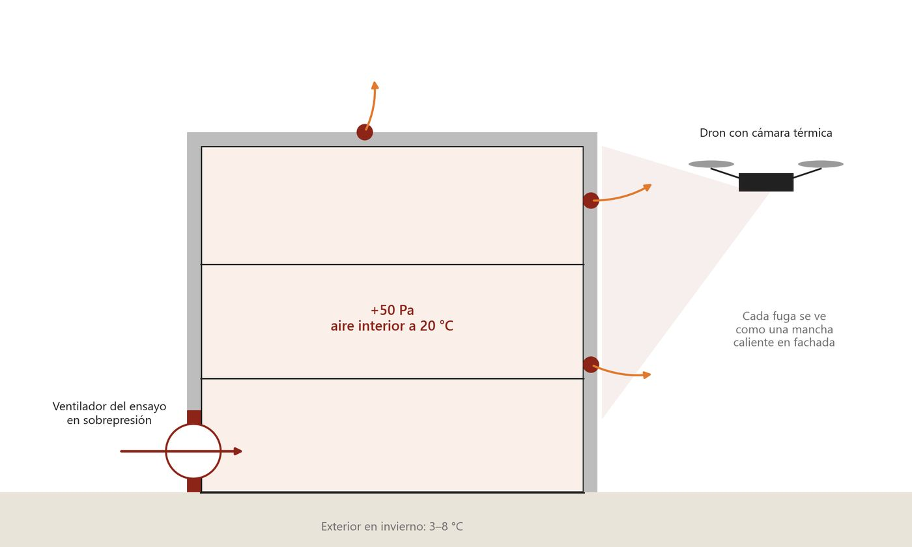

Termografía exterior de envolventes
Edificios Passivhaus y de alta eficiencia energética
Desde el interior, la termografía se hace estancia por estancia: la imagen queda fragmentada, depende del mobiliario y de poder entrar en cada vivienda. Desde fuera, el dron ve la envolvente completa y continua, con las plantas altas, los frentes de forjado, los encuentros con la cubierta y los petos, que desde el suelo apenas se ven.
En un Passivhaus los defectos son pequeños y localizados, y es justo ahí donde importa tener la fachada entera en una sola lectura: un frente de forjado sin rotura de puente térmico o un tramo con el aislamiento mal colocado aparecen como una línea o una mancha más caliente que el resto del paramento.
Qué incluye- Puentes térmicos en forjados, pilares, dinteles y carpinterías
- Discontinuidades o faltas de aislamiento en fachada y cubierta
- Fugas de aire por la envolvente, con el método combinado
- Entregable
- Mosaico térmico de cada fachada y de la cubierta, anomalías numeradas e informe
- Cuándo
- De noviembre a marzo, al amanecer o de noche
Método combinado con el blower door
Termografía exterior durante el ensayo en sobrepresión
El ensayo blower door mide cuánto aire se escapa del edificio, pero no dice por dónde. Si el ensayo se hace en sobrepresión mientras volamos, el aire interior, más caliente, sale por cada fuga y calienta la fachada justo en ese punto. Desde fuera, cada fuga se ve como una mancha caliente localizada.
Se aprovecha una visita que ya está prevista, no hay que entrar en las viviendas y el resultado es un plano de fachada con las fugas señaladas, listo para corregirlas antes de repetir el ensayo.

